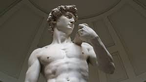
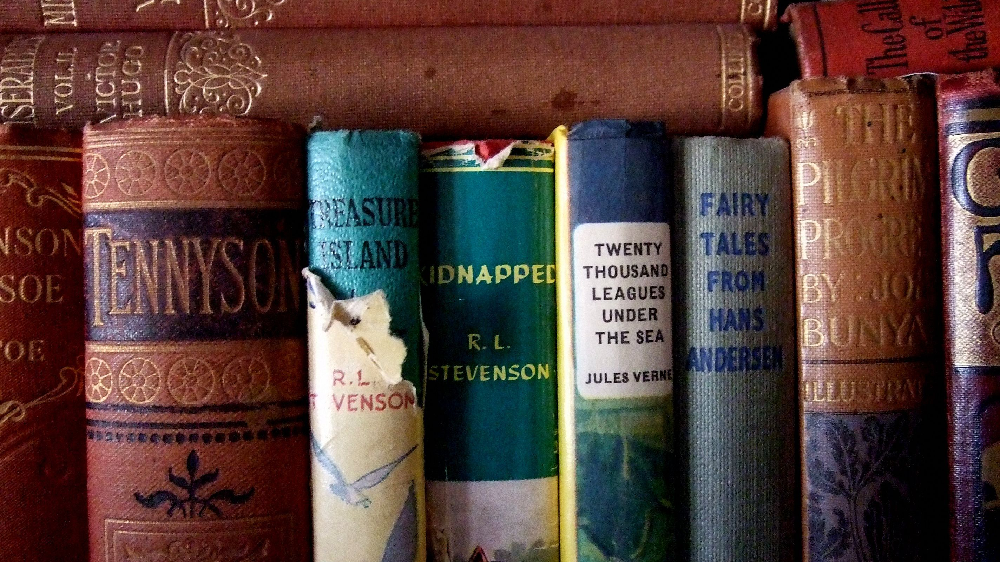
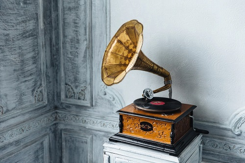
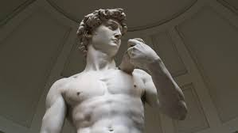
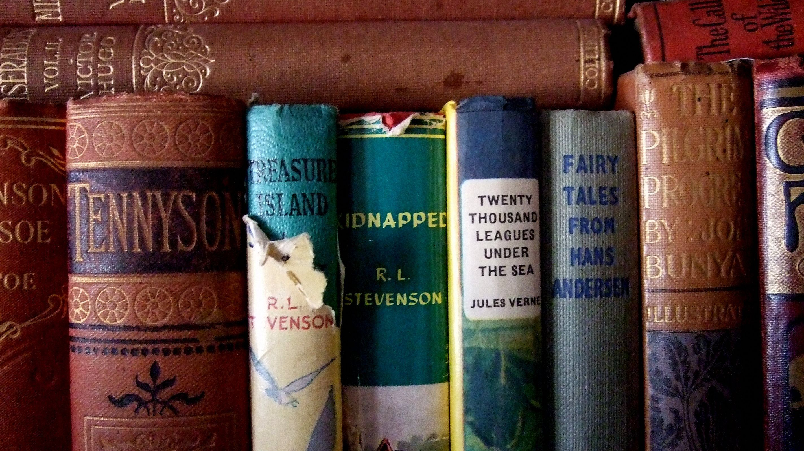
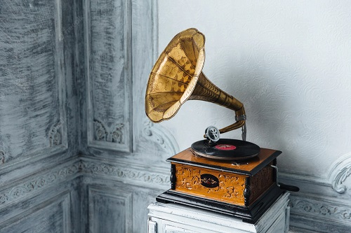

Learn about Art!
Learn about Art!
What is Art?Art is a very wide range of human practices of creative expression, storytelling and cultural participation.
Types of Art
Paintings
 Sculptures

Literature

Music

Timeline of Art History
Romanesque 1000-1150
Renaissance 1495 – 1527
Expressionism 1890 – 1939
Abstract Art 1945 – 1960
Contemporary 1978 – now
Sculptures

Literature

Music

Timeline of Art History
Romanesque 1000-1150
Renaissance 1495 – 1527
Expressionism 1890 – 1939
Abstract Art 1945 – 1960
Contemporary 1978 – now